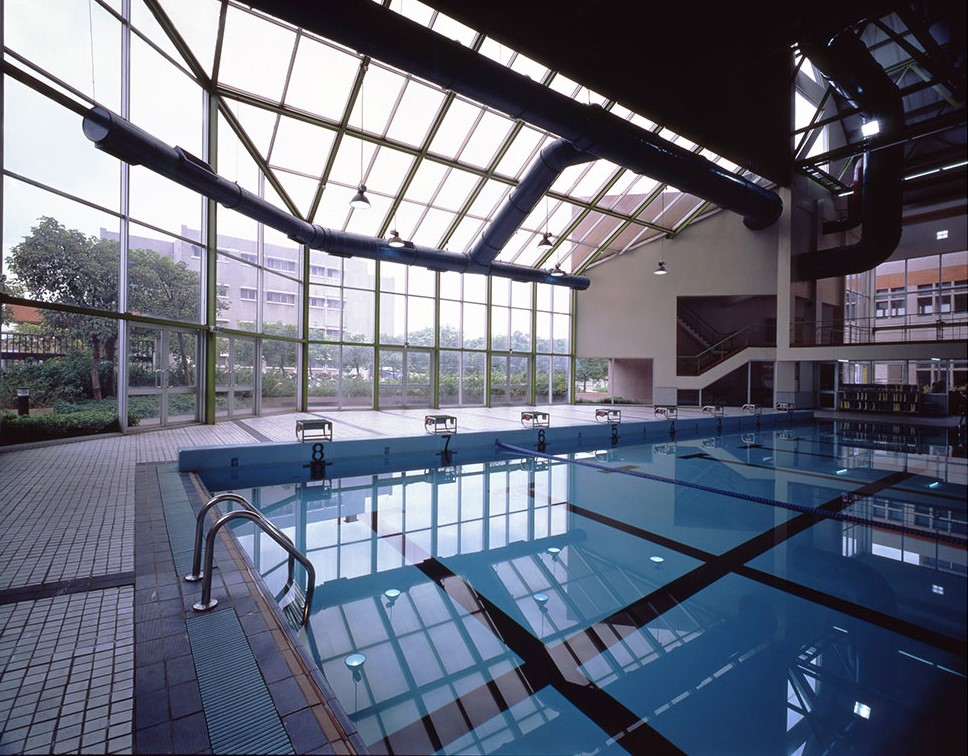

中原大學在其體育館側，興建一奧運標準之室內游泳池，池內有水道8條長50M，提供游泳教學及正式比賽之用。 外牆R.C、屋頂鋼構，造型配搭先已建成之體育館。在設計上乾濕動線嚴格劃分，觀眾自門廳直接引導至二層看台， 可容納觀眾400～600席，看台架高與體育館二樓以天橋相連，看台下方作為更衣、浴廁、管理及機電之用。 由於泳池一面臨校外道路，故僅開高窗，泳池兩端以大玻璃面配合池邊教學活動及休憩空間，並以天窗採光。 本工程總樓地板面積3,130平方公尺，總工程造價75,000,000元，於1991年5月竣工。 本工程與體育館新建工程共同獲得中華民國建築師雜誌銀牌獎。
泳池內部圖

進入室內的體育場，每個人都需要收些費用，包括學生、教師或是校外人士，左圖是
校方的收費標準。